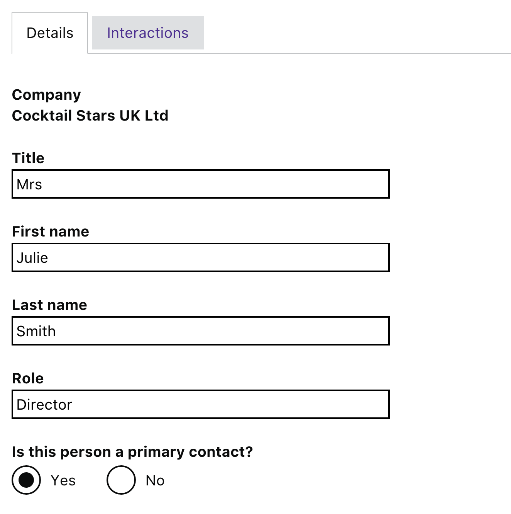
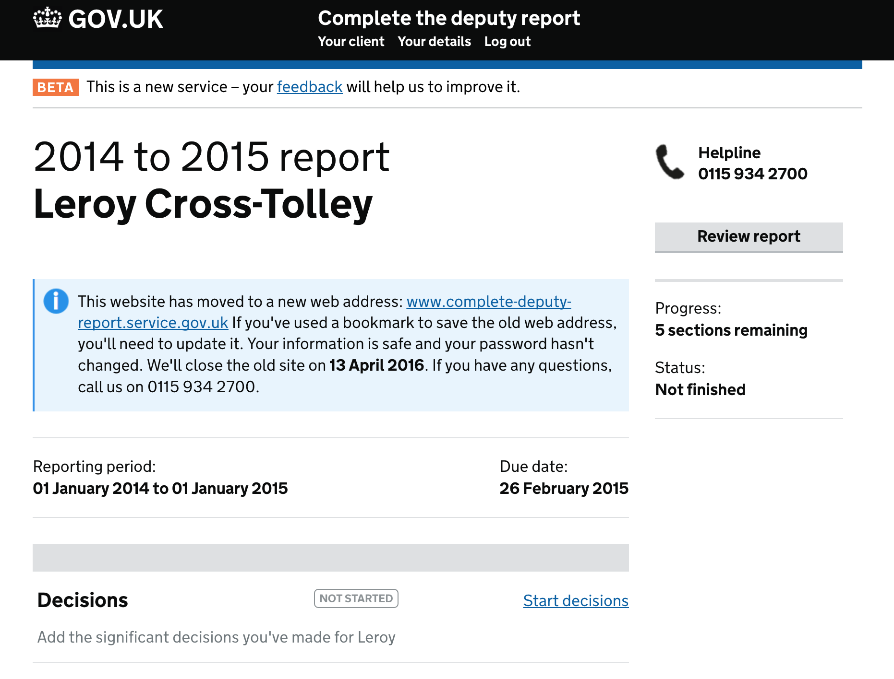

I currently work in an agile team on a project within the Department for International Trade and Investment to replace an existing CRM platform with a new in house developed service. The new platform follows the GDS guidelines for style and layout, adapted to deliver a CRM. Development is user research driven, with regular user testing sessions to gain feedback and help fine tune the design and user interaction.
My primary role within this project is to deliver the web front end, though to start with I worked very closely with the user researcher and designer to create a near fully working prototype, using a combination of Postgresql, DJango Rest Framework and Node JS/Sass/Nunjucks. This prototype allowed rapid development of interface ideas and journeys. Once the requirements started to settle, back end developers were brought in to deliver integration with the existing back end and I have focussed on creating the front end screens, flow and components.
As lead front end developer I have also be responsible for setting standards and looking at common themes across project and focused on the creation of a front end toolkit to avoid duplication of work and a consistant user experience. Furthermore I have been providing consultancy and advise on the hiring of other front end developers

I worked at the Ministry of Justice in the Office of the Public Guardian developing a 'Digital deputy' service. The service is designed for members of the public responsible for the finances and welfare of people who have lost the mental capacity to manage their own affairs or make important decisions. My primary role was to develop the frontend of the service inline with styles and guidelines laid down by GDS and work with the GDS community.
The service used PHP and Symfony 2 for it's server side framework and the frontend used TWIG to generate HTML pages, with styles authored in SASS and extended the GDS Elements project. The site is accessable for users of differing levels of technical and physical ability and works on all devices, ranging from people with very old computers to the latest mobile devices. The site uses progressive enhancement to improve the experience for devices capable of supporting it, including features such as autosave and real time validation. The focus on the site is to make it as easy to use and as clear as possible. As part of the project I extracted the controls created for it and started to develop a standalone project to make them reusable.
Javascript components were developed following TDD with tests written in Mocha JS, Integration testing was developed in BEHAT with cross browser testing automated and integrated with Browserstack. The service was developed and deployed using Docker containers to make it easy to develop the platform anywhere and provide predictable deployment.
The project was developed following the GDS principles for service delivery, being user research driven and created by a small tight knit team. I worked on the project from early in the Alpha stage and ultimately through a public Beta assessment and learned a lot from that.

I Joined the Sky Search team as a front end developer working primarily with HTML/Javascript/CSS in an agile environment. During my time at Sky I was responsible for the development of many projects, starting with a redevelopment of search for the Sky help website, and improvement of all of Sky's web based search services.
As part of a Sky wide project to make their sites more responsive, and the introduction of a new search backend, I was asked to re-write the search sites so that they could integrate with a new backend and provide support for a wide range of devices, from mobile up to desktop. I developed the new system with a NodeJS backend, which allowed fast flexible development and is capable of handling very high volumes of traffic in a fault tolerant configuration.
Some applications I developed were single page web applications, whilst others followed a more traditional route, depending on their needs. I also developed other prototypes and proof of concept applications including a fully working mockup of 'set top box search' to gain buy in from the business and an iPad prototype to demonstrate future search capabilities.
During development of these systems I setup automated testing using MochaJS for unit testing and Cucumber/Webdriver for integration and cross browser testing.
In my last project at Sky I worked as part of a team that delivered a new Search API for use with Sky's upcoming 'Q' box. This is a complex Java/Jersey server application that ingests program information into Mongo and Solr and then allows access to that via a JSON api. This service had to scale to millions of users and serve thousands of transactions a second within a very short time, so as not to impact users experience on their TV.
Responsible for the technical design and development of the Web'n'Walk mobile portal. I was responsible for the development of the current live portal, and its predecessor, working in a small team to tight deadlines. Whilst in this role I have also been tasked with developing prototypes of ideas for new applications on iPhone and Android and am in the process of writing an app using the Sencha Touch framework.
Responsible for design and delivery of T-Mobile widget framework and mobile widgets. In this role I designed a Javascript component based framework to allow development of widgets using a single code base to be deployed to a wide range of different handsets. I was also responsible for managing a team of 4 developers and communicating with the business.
Worked on the 'Next Generation Portal' project within Vodafone Group as technical architect/design authority for web based widgets. Worked on project from initial inception through to delivery.
Technical lead in development of service to allow SME customers to remotely manage mobile handsets via web based service.
Software evaluation, server/software installation configuration, SMTP (Netscape/Exim), JSP/Java/C/Objective C development, Postgres/Oracle/MySql Development and support, SIP, SNMP, Tomcat, Solaris, Linux, NT, SIP Express Router
EPG and interactive TV application development for set-top-boxes using javascript based framework and server framework based on JSP's. Designed interfaces according to client branding.
Mobile unified messaging, design, architecture, documentation, team management, project management, integration, implementation, SMTP/IMAP/POP3, Java, JSP/EJB, SMS, MMS, LDAP, Unix, Perl, SMIL, 3G, Apache, Tomcat, Weblogic, Oracle
When I'm not working on a project or trying out ideas I am kept MORE than busy looking after my kids, the chickens and pretending to be a farmer.